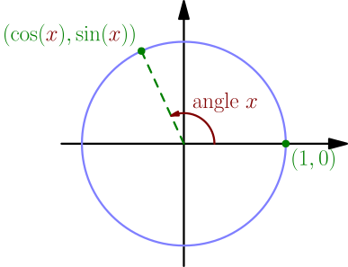
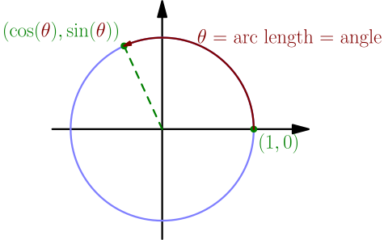
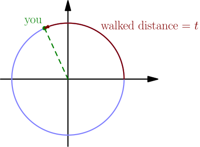
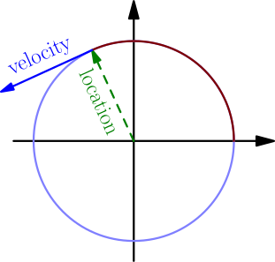
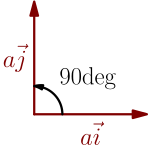
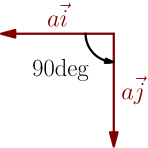
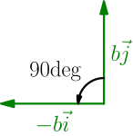
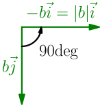
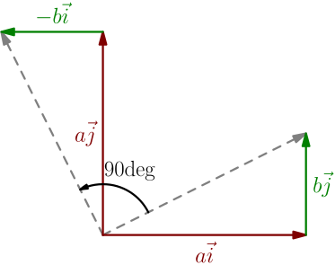

Trig Derivatives¶
On this page we find $\frac{d}{dx}\sin(x)$, $\frac{d}{dx}\cos(x)$ and $\frac{d}{dx}\tan(x)$. We use the unit-circle definitions of $\sin(x)$ and $\cos(x)$: Interpret $x$ as an angle, and rotate that amount counter-clockwise on the unit circle starting at $(1,0)$. Then $\cos(x)$ is the $x$-coordinate of the resulting point and $\sin(x)$ is the $y$-coordinate.

This is confusing, because $x$ usually means the $x$ coordinate, not an angle. To avoid this confusion, I often name the angle something like $t$ or $\theta$ instead of $x$.
On this page, and in calculus in general, we don't use degrees as the unit of the angle. In fact, the resulting derivative formulas don't work if your angles are represented as degrees. Instead, we use radians, which are simply arc length on the unit circle: an angle $\theta$, as radians, means the angle that a unit circle arc of length $\theta$ makes. For example, 360 degrees would be the unit circle's circumference $2\pi$.

Derivatives of $\sin$ and $\cos$, with physics¶
Let $t$ represent time as seconds. Let's say you are walking around in a circle of radius 1 metre so that after $t$ seconds of walking, the distance traveled so far is $t$ metres. In other words, your speed is 1 metre per second.

Because the arc length is the time $t$, and because the radius of the circle is 1 (metre), the angle on the unit circle is $t$ radians and so your location is $(\cos(t),\sin(t))$. The derivative of this vector is the velocity, i.e. a vector indicating in which direction and how fast you are moving: $$ \begin{align} \text{velocity vector} &= \frac{d}{dt}(\cos(t),\sin(t)) \\ &= \left( \frac{d}{dt}\cos(t), \frac{d}{dt}\sin(t) \right) \end{align} $$ So to find $\frac{d}{dt}\cos(t)$ and $\frac{d}{dt}\sin(t)$, for any number $t$, we only need to know the $x$ and $y$ components of the velocity vector. The velocity vector always points along the circle, because you are moving along the circle:

The length of the velocity vector is 1, because your speed is 1 (metre per second). The length of the location vector $(\cos(t),\sin(t)) = \cos(t)\I + \sin(t)\J$ is also 1, because you are on the unit circle. Looking at the picture, it is now clear that we can get the velocity vector by rotating the location vector 90 degrees counter-clockwise.
To figure out how to rotate a vector by 90 degrees, we first figure out how to rotate $a\I$ and $b\J$, and then any vector $a\I+b\J$ (similarly to how it's done in linear algebra). Rotating $a\I$ 90 degrees counter-clockwise gives the vector $a\J$. With positive $a$, it looks like this:

With negative $a$, it looks like this:

Rotating $b\J$ 90 degrees counter-clockwise gives the vector $-b\I$. With positive $b$, the vector ends up pointing left:

With negative $b$, the vector ends up pointing right, but $-b\I$ is still correct because $-b$ is now positive:

Any vector $a\I+b\J$ rotated 90 degrees counter-clockwise is now $-b\I+a\J$, because we can rotate the $a\I$ and $b\J$ parts individually.

Let's put it all together: $$ \begin{align*} \left( \frac{d}{dt}\cos(t), \frac{d}{dt}\sin(t) \right) &= \text{velocity vector} \\ &= \operatorname{rotate90deg}(\text{location vector}) \\ &= \operatorname{rotate90deg}(\cos(t)\I+\sin(t)\J) \\ &= \operatorname{rotate90deg}(a\I+b\J), \quad \text{where $a=\cos(t)$ and $b=\sin(t)$} \\ &= -b\I+a\J \\ &= (-b,a) \\ &= (-\sin(t),\cos(t)) \end{align*} $$ We can now compare the $x$ and $y$ coordinates of the first and last vectors.
$$ \frac{d}{dx}\sin(x) = \cos(x), \qquad \frac{d}{dx}\cos(x) = -\sin(x) $$
An advantage of this derivation is that it very clearly shows why one of the derivatives has a minus in front and the other doesn't: that comes from how 90-degree rotations work. A disadvantage is that because it relies on physics, it is not convincing from a purely mathematical point of view.
Derivative of $\tan$¶
Because $\tan(x) = \frac{\sin(x)}{\cos(x)}$ (TODO), we can use the quotient rule and plug in the derivatives of $\sin(x)$ and $\cos(x)$ that we just derived. $$ \begin{align} \frac{d}{dx}\tan(x) &= \frac{d}{dx} \frac{\sin(x)}{\cos(x)} \\ &= \frac{\left( \frac{d}{dx}\sin(x) \right) \cos(x) - \sin(x) \left( \frac{d}{dx}\cos(x) \right)}{(\cos(x))^2} \\ &= \frac{\cos(x)\cos(x) - \sin(x)(-\sin(x))}{\cos^2(x)} \\ &= \frac{\sin^2(x) + \cos^2(x)}{\cos^2(x)} \end{align} $$ There are two ways to simplify this from here:
- Splitting the fraction into two: $\dfrac{\sin^2(x)}{\cos^2(x)} + \dfrac{\cos^2(x)}{\cos^2(x)} = \tan^2(x) + 1$
- Using $\sin^2(x) + \cos^2(x) = 1$ (a well-known trigonometry result).
$$ \frac{d}{dx}\tan(x) = \tan^2(x) + 1 = \frac{1}{\cos^2(x)} $$
Both ways to write the derivative have their own advantages and disadvantages. You can use whichever is more convenient. For example, $\tan^2(x)+1$ is useful if you will need to compute the value of $\tan(x)$ anyway, but things like $$ \cos(x) \cdot \frac{d}{dx} \tan(x) $$ simplify better if you write the derivative as $\dfrac{1}{\cos^2(x)}$.